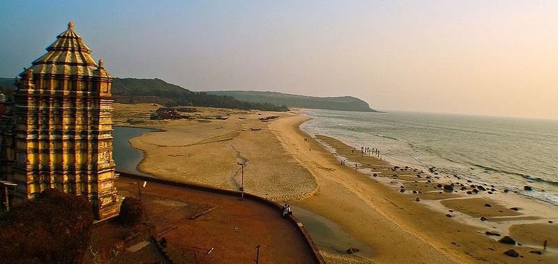
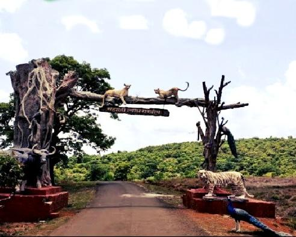

Day 1: Kunkeshwar Beach
Relax at the peaceful Kunkeshwar Beach and explore the famous Kunkeshwar Temple.
- Solapur → Kunkeshwar (~390 km)
- Visit Kunkeshwar Temple
- Evening Beach Walk & Sunset
- Overnight Stay at nearby Resort

Day 2: Vijaydurg Fort Exploration
Historic fort by the sea with rich Maratha legacy and scenic coastal views.
- Kunkeshwar → Vijaydurg (~40 km)
- Explore Vijaydurg Fort (Entry Fee Applicable)
- Photography & Guided Tour
- Local Seafood Lunch
- Return to Stay / Travel towards Chandoli

Day 3: Chandoli National Park
Enjoy jungle safari, wildlife photography and nature trails in Chandoli.
- Vijaydurg → Chandoli (~150 km)
- Safari Timings: 6:00 AM – 11:00 AM / 3:00 PM – 6:00 PM
- Trekking options available
- Stay in Eco-resort or Forest Rest House

Day 4: Return to Solapur
Begin the journey back to Solapur filled with nature and history memories.
- Chandoli → Solapur (~320 km)
- Estimated Time: 7–8 hrs
- Take halts for refreshment
🗺️ Trip Route
*Note: Zoom & interact with the map to view the detailed route.*
💰 Budget Breakdown (Approx. per person)
*considering 10 people are going
| Category |
Amount (₹) |
| Distance expected |
900 km |
| Fuel/Transport |
1700–1900 |
| Accommodation (3 nights) |
1200 |
| Food |
1500–1800 |
| Safari & Entry Fees |
700 |
| Activities & Misc. |
400–600 |
| Total |
₹5,500 – ₹6,200 |
🏨 Suggested Stay Options
- Kunkeshwar: MTDC Beach Resort, Samudra Beach Stay
- Vijaydurg: Hotel Prabhukrupa, Local homestays
- Chandoli: Forest Rest House, Jungle Resorts